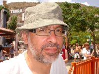
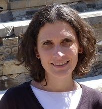
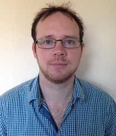
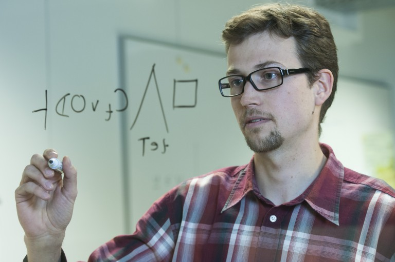
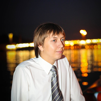

Current Team
This page describes the current team working on Vampire. For a history of past team members see the History page.
|  |
Andrei Voronkov (Univeristy of Manchester, TU Wien, EasyChair) is the original developer of Vampire, beginning work in 1990 (see History). He was awarded the Herbrand Award in 2015 for numerous theoretical and practical contributions to automated deduction, and the development of the award-winning Vampire theorem prover. He is also founder of the EasyChair conference management system and LPAR conference series. |
|  |
Laura Kovács (TU Wein) joined the Vampire team in 2009 and began a large collaborative effort in applying Vampire to program analysis. |
|  |
Giles Reger (University of Manchester) joined the Vampire team in 2014. He is currently a Lecturer in Manchester and leads the group there with Andrei. |
|  |
Martin Suda (TU Wein) joined the Vampire team in 2014. He is currently a PostDoc in Laura's group in TU Wein and was previoiusly with Andrei in Manchester. |
|  |
Evgenii Kotelnikov (Chalmers University of Technology) joined the Vampire team in 2014. He is currently a PhD student at Chalmers, supervised by Laura and Andrei. |
|